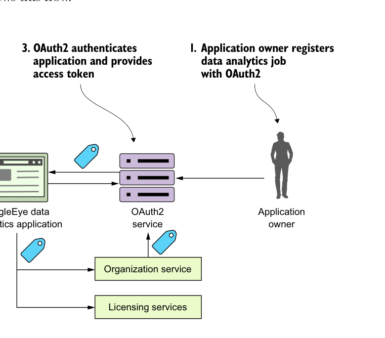

Ví dụ, giả sử mỗi giờ một lần, ứng dụng EagleEye có một tác vụ phân tích dữ liệu chạy. Trong phần công việc của mình, tác vụ này gọi ra các dịch vụ EagleEye. Tuy nhiên, các nhà phát triển EagleEye vẫn muốn ứng dụng đó tự xác thực và ủy quyền cho chính mình trước khi có thể truy cập dữ liệu trong các dịch vụ đó. Đây là lúc client credential grant có thể được dùng. Hình B.2 minh họa luồng này.
Chủ ứng dụng đăng ký tác vụ phân tích dữ liệu với OAuth2.
Khi tác vụ phân tích dữ liệu chạy, EagleEye truyền tên ứng dụng và khóa cho OAuth2.
OAuth2 xác thực ứng dụng và cung cấp token truy cập.
EagleEye gắn token truy cập vào mọi lời gọi dịch vụ.

Client credential grant dùng cho xác thực và ủy quyền ứng dụng “không có người dùng tham gia”.
- Chủ sở hữu tài nguyên đăng ký ứng dụng phân tích dữ liệu EagleEye với dịch vụ OAuth2. Chủ sở hữu tài nguyên sẽ cung cấp tên ứng dụng và nhận lại một khóa bí mật.
- Khi tác vụ phân tích dữ liệu EagleEye chạy, nó sẽ trình bày tên ứng dụng và khóa bí mật do chủ sở hữu tài nguyên cung cấp.
- Dịch vụ OAuth2 EagleEye sẽ xác thực ứng dụng bằng tên ứng dụng và khóa bí mật được cung cấp, rồi trả lại một token truy cập OAuth2.
- Mỗi lần ứng dụng gọi một trong các dịch vụ EagleEye, nó sẽ trình bày token truy cập OAuth2 đã nhận cùng với lời gọi dịch vụ.
B.3 Các loại cấp quyền authorization code
Authorization code grant là loại cấp quyền OAuth2 phức tạp nhất, nhưng cũng là luồng được dùng phổ biến nhất vì nó cho phép các ứng dụng từ các nhà cung cấp khác nhau chia sẻ dữ liệu và dịch vụ mà không phải buộc phải tiết lộ thông tin đăng nhập của một người dùng